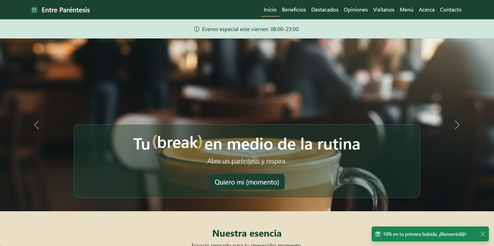
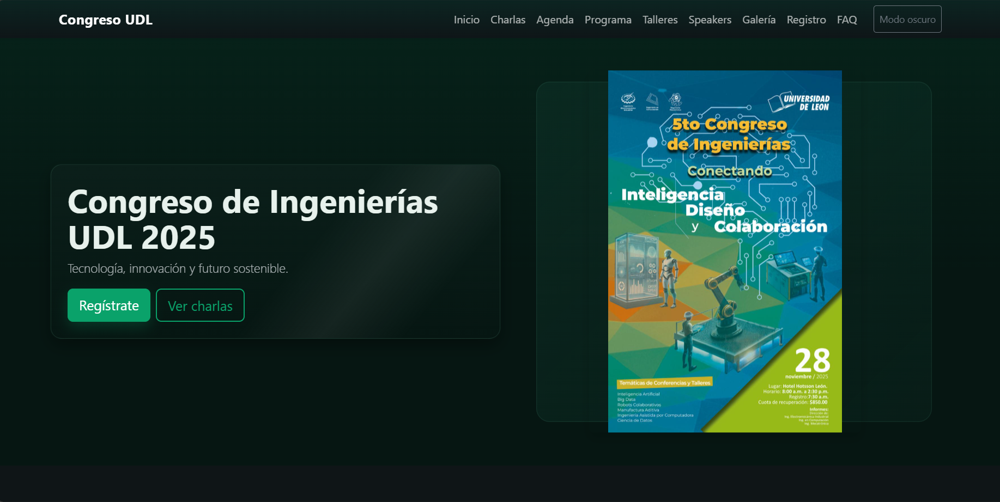
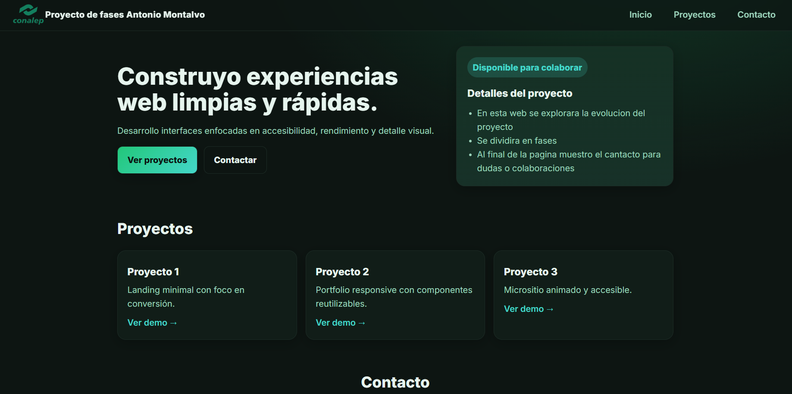

 Landing page moderna creada para una cafetería incluyendo menu y demás. Abrir proyecto Proyecto Web Entre Parentesis
 Landing page informativa creada con bootstrap para el congreso de ingenierias. Abrir proyecto Proyecto Web Congreso de ingenierías
 Prototipo de página educativa que explica las fases principales de un proyecto. Abrir proyecto Proyecto Escolar Prototipo